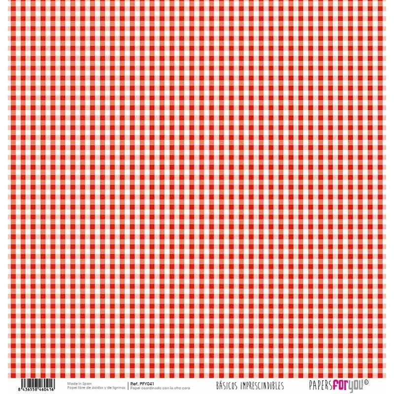
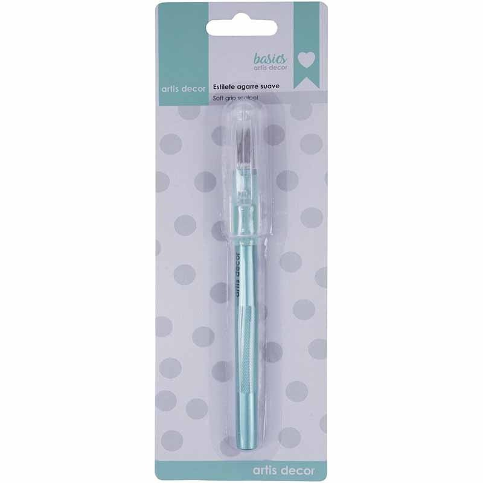

MENOS OLVIDOS. MÁS GANAS DE CREAR.
Tu mesa
de scrap.
Pon tu idea sobre la mesa. Reúne los materiales, separa lo que ya tienes y llévate una lista clara.
Vamos a preparar algoSin registro · Tú decides qué comprar


lo que ya tienes.
01 / EL PUNTO DE PARTIDA
¿Qué te apetece preparar?
Son selecciones para empezar.
Ajusta materiales y cantidades a tu proyecto.
Las selecciones se combinan sin duplicar productos. No son recetas completas ni calculan el consumo necesario.
02 / TUS MATERIALES
Del catálogo a tu mesa.
02 nov 2026
Fotografías y referencias del catálogo oficial. Precio, formato de venta y disponibilidad se confirman en cada ficha. Esta muestra no conecta con el carrito de la tienda.
UNA IDEA PARA CREA TUS MANUALIDADES
El proyecto empieza en la cabeza.
La lista puede hacerse sola.
Esta muestra transforma una selección de productos en una lista útil. Así podría crecer con el equipo de la tienda, después de validar cómo trabaja.
- 01
Organizar por proyecto
Validar las selecciones con la tienda y mantener referencias desde su catálogo.
Medir: listas terminadas / listas iniciadas. - 02
Recibir consultas completas
Llevar cantidades y productos a su atención comercial, con el permiso del cliente.
Medir: consultas completas y tiempo de respuesta útil. - 03
Preparar la próxima reposición
Recordar lo disponible y proponer reposiciones basadas en compras confirmadas, con consentimiento.
Medir: errores reportados y pedidos pagados vinculados a listas.